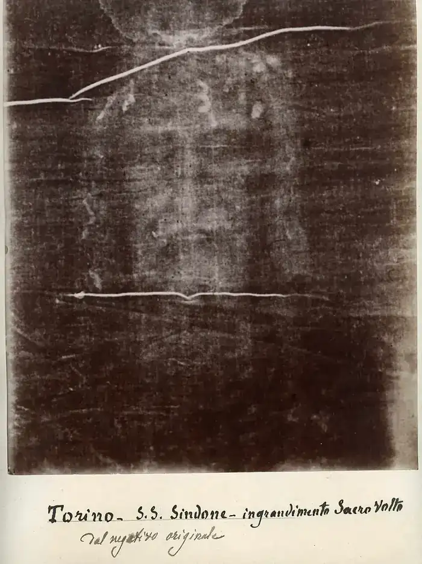
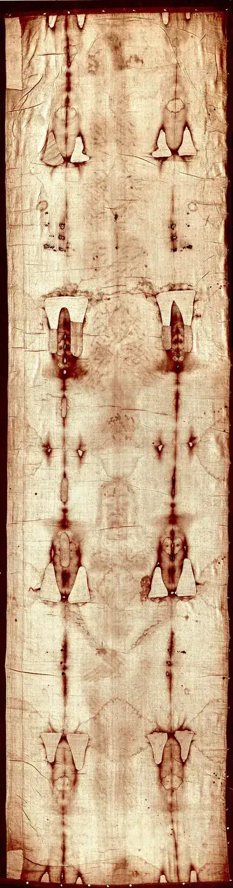

The claim
The Shroud of Turin is a linen cloth bearing a faint double image of a bearded man, front and back. The radiation hypothesis says the image was formed by a burst of energy — light, protons, neutrons — at the moment of resurrection, and that this flash also reset the cloth's radiocarbon clock, which is why three independent laboratories dated it to 1260–1390.
Maps, diagrams and images




The second half of that claim exists to explain away the first half's problem. Radiocarbon dating of the Shroud, published in Nature in 1989, was a blind test across three accelerator laboratories with control samples; the result was consistent and unambiguous.
What the image actually is
The image behaves like a painting or a contact transfer: it sits on the surface of the fibres, it is more intense where the cloth would touch a body, and it lacks the geometric distortion a projected image would produce. It also has anatomical errors — the hair, the proportions of the face, the position of the hands — that a real body would not produce.
No physical mechanism has been demonstrated that would produce this image on this cloth and leave no other trace. The radiation proposals are computer models fitted to the image, not experiments that generate it.
Documented: the cloth is medieval, dated by three laboratories in a blind protocol.
Documented: the image is a surface phenomenon with painting-like characteristics.
Not demonstrated: any radiation mechanism that produces the image.
Circular: the claim that the flash reset the radiocarbon date has no independent evidence — it is inferred from the date it is meant to explain.
The honest label: fringe. The image is unexplained in detail; the resurrection-flash explanation is unevidenced and requires the dating to be wrong for a reason nobody has shown.
Why it is in the archive
Because it is the archive's best example of an explanation that is built backwards from a conclusion. Everything in it is designed to protect the conclusion from the measurement, which is the opposite of how the rest of these pages are argued.
Open resources on this topic
- PapersOpen-access articles: DOAJ · PubMed Central · Internet Archive Scholar
- BooksPublic-domain and borrowable copies: Open Library · Project Gutenberg · Google Books · Internet Archive
Cite this page
Momin, S. (2026). The Shroud as a Radiation Flash. The Larger World Archive. https://drsamonline.github.io/LARGE_GLOBE/shroud-radiation.htmlMomin, Sohil. “The Shroud as a Radiation Flash.” The Larger World Archive, 2026, https://drsamonline.github.io/LARGE_GLOBE/shroud-radiation.html.Momin, Sohil. “The Shroud as a Radiation Flash.” The Larger World Archive, 2026. https://drsamonline.github.io/LARGE_GLOBE/shroud-radiation.html.@misc{the2026shroud,
author = {Momin, Sohil},
title = {The Shroud as a Radiation Flash},
year = {2026},
howpublished = {The Larger World Archive},
url = {https://drsamonline.github.io/LARGE_GLOBE/shroud-radiation.html},
note = {Last reviewed 20 November 2026}
}Last reviewed 20 November 2026 · Corrections policy · this page is not peer reviewed
Sources for this page
- Wikipedia, “Shroud of Turin” — the cloth, the image and the datingen.wikipedia.org
- Damon et al. (1989), Nature — the radiocarbon resultdoi.org
- Wikipedia, “Radiocarbon dating” — how the method works and what resets iten.wikipedia.org
- Wikipedia, “Image analysis” — the surface-imaging evidenceen.wikipedia.org